屬性的操作 (attributes)
屬性表所記錄與呈現的是每一個空間物件 (spatial features) 的屬性資訊。例如，以醫院點資料來說，屬性可以是每一家醫院的名稱、醫院大小規模如病床數、醫師數等；或是以鄉鎮資料來說，屬性可以是每一個鄉鎮(polygon)的面積、人口數、家戶數、扶養比等。
我們常常可能會需要對屬性表進行一些計算處理、或是針對屬性進行空間物件的選取等。以下主要用鄉鎮人口資料(點擊下載)作說明。
屬性的編輯
要對屬性表進行調整、新增、刪除、值的計算等過程之前，需要將編輯模式打開，也就是把在屬性表工具欄中的第一個選項點開：
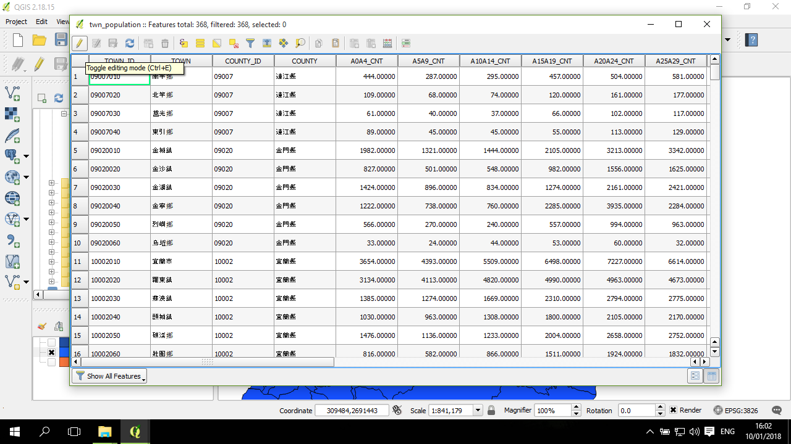
注意，在背景的圖層的邊框出現紅色的符號(上圖中已連成線)，表示其實這些點(vertex) 都可以被移動。如果只需要調整屬性表，記得不要調整、移動到這些點；在完成編輯後要關閉編輯模式。
新增欄位
新增欄位的操作是，在工具欄的倒數第四個按鈕，即符號的下方區域有一塊黃色的按鈕 (New field, 快捷鍵為 Ctrl+W)：
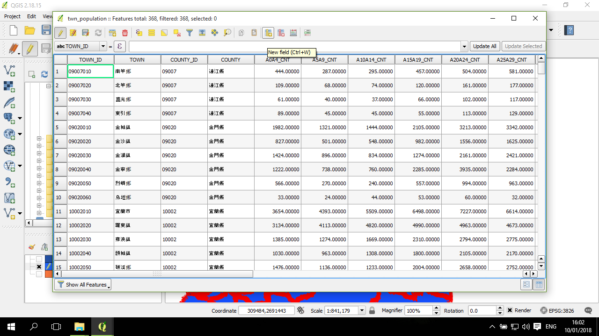
會出現一個小視窗，設定欄位名稱、資料格式(整數(無小數點)、實數(有小數點)) ，下方的欄位是設定實數精準度等資訊，如果沒有特殊需要可以使用預設的值：
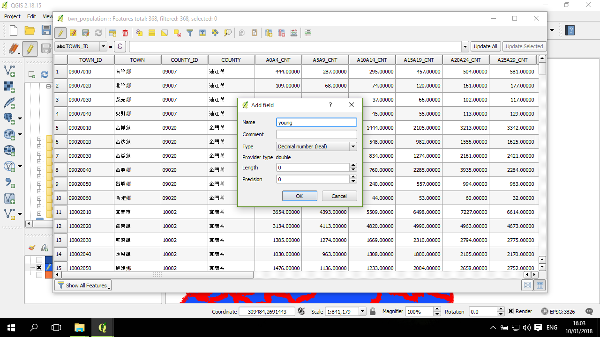
這時候屬性表的最後面(最右邊) 會出現剛剛新增的欄位，所有空間物件的這個屬性都是 NULL：
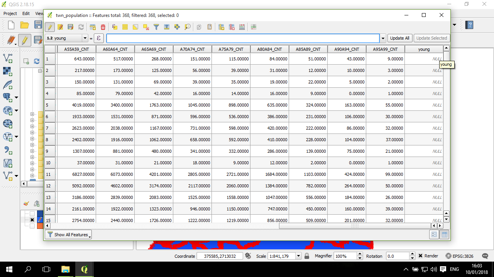
計算欄位
在新增欄位後，或如果要對既有欄位進行重新計算，這時候需要在屬性表上面，編輯模式下才出現的那欄的第一項，下拉選單找到要計算的目標欄位，然後點一下在右邊的等號右邊的 Sigma 符號按鈕，出現以下視窗：
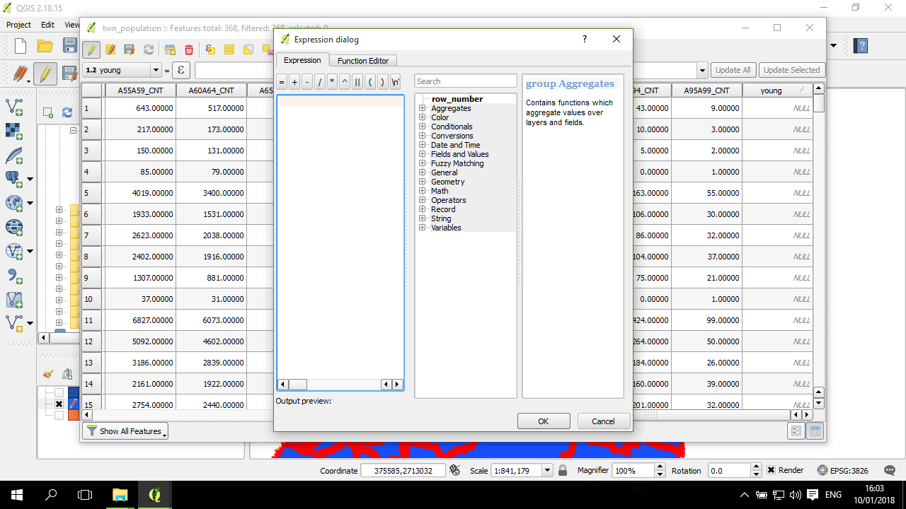
這視窗的左邊是計算的方程式，中間是一些計算過程所需要的東西，包括各個欄位，右邊則是一些輔助資訊。
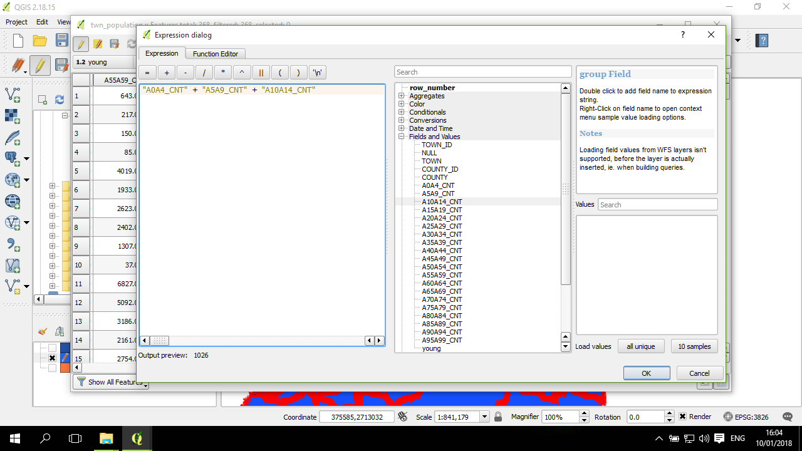
教學是要計算各鄉鎮的老化指數，老化指數是指每100個65歲以上人口對14歲以下人口之比，指數越高，代表高老齡化情況越嚴重。這個shapefile 檔案所有的屬性資料欄位是每5歲年齡組的人口數。因此，在計算14歲以下的人口數時，需要將0-5歲、5-10歲、10-15歲的欄位依鄉鎮相加。
點OK後回到前一頁面。這時候，等號右邊出現的是剛剛設定的計算方程式。這時候再按下其右方的更新按鈕(Update All)：
然後欄位中的值從原來的 NULL 轉成計算好的數值：
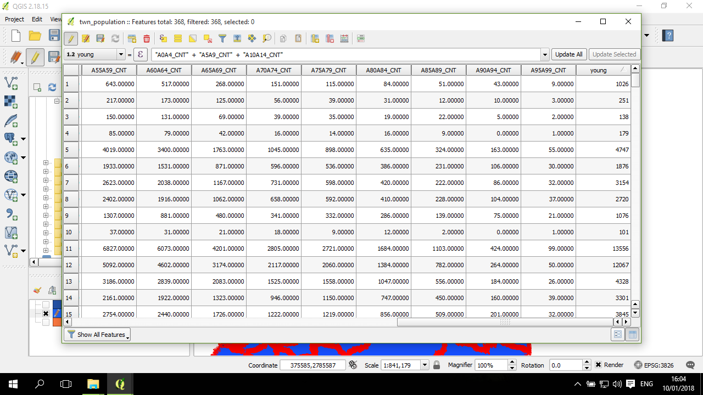
跟前述一樣，計算好 65歲以上人口數，然後再將 65歲以上 / 15歲以下 * 100 得到老化指數：
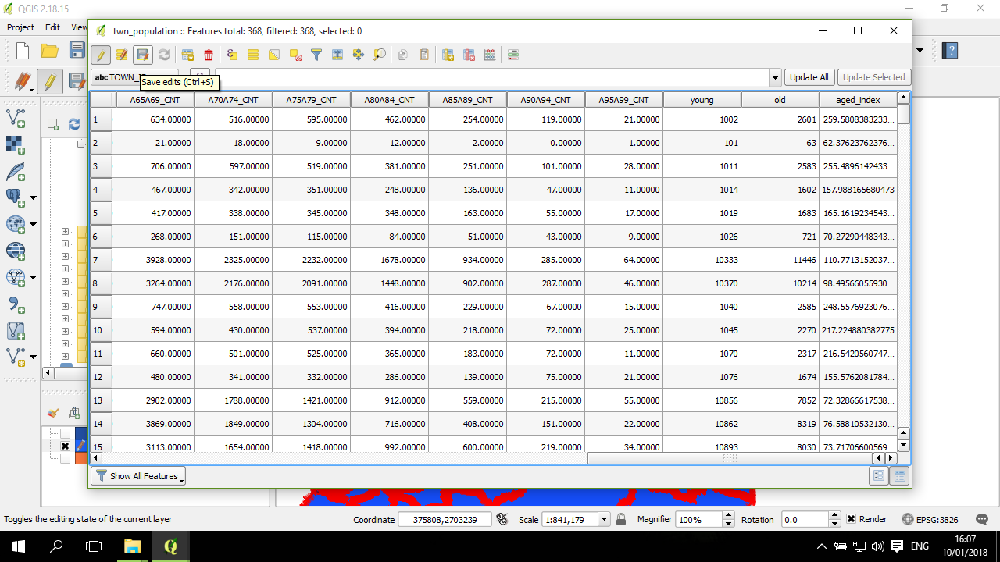
確認好該計算的欄位都完成後，點一下儲存編輯 (工具欄的第三個按鈕)，然後按一下第一個按鈕將編輯模式關閉：
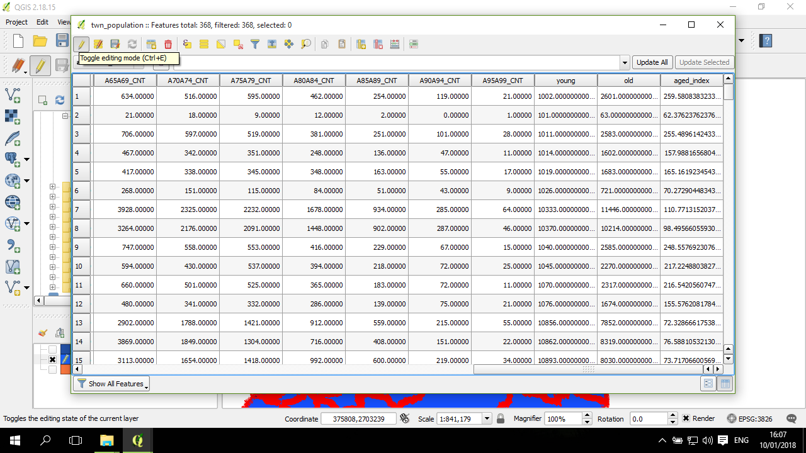
這時候編輯模式已關閉，注意底下的紅色邊框符號也一併關閉了：
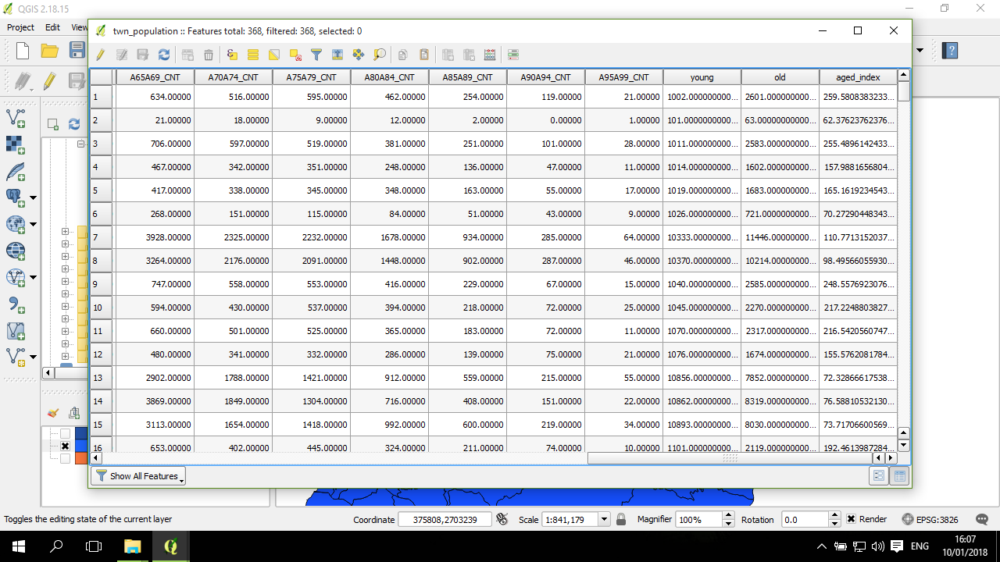
依屬性選取空間物件 (select by attributes)
我們有時候會需要針對屬性會進行空間物件的選取。比方說，將老化指數高於50的地方選取出來；或是從台灣鄉鎮圖層選取出臺北市的鄉鎮。
這部分並沒有要編輯屬性表，所以不需要打開編輯模式。
在上方工具欄，點開第七個按鈕，也就是按鈕的背後有一個黃色方框，前面有一個 Sigma 符號：
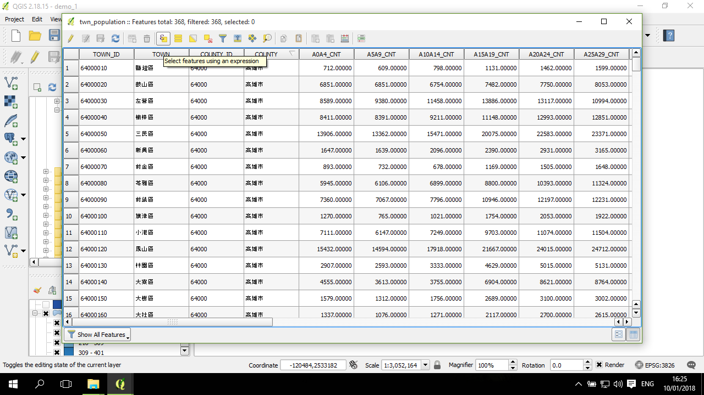
出現這個視窗。舉例來說，需要選取「縣市欄位」為「臺北市」的的 rows，則透過中間區塊的 Fields and Values，找到縣市欄位的欄位名稱 ("COUNTY") 點兩下，然後點左方上面的等號 (=)，在右邊下方的區塊中點 all unique ， 然後找到"臺北市" 點兩下。 整個 Expression 是： "COUNTY" = '臺北市' 。 這部分也可以透過直接用鍵盤輸入，不過為了避免一些細節錯誤，所以可以的話直接用點擊的方式來產生會比較好。最後點右下角的 Select 選取：
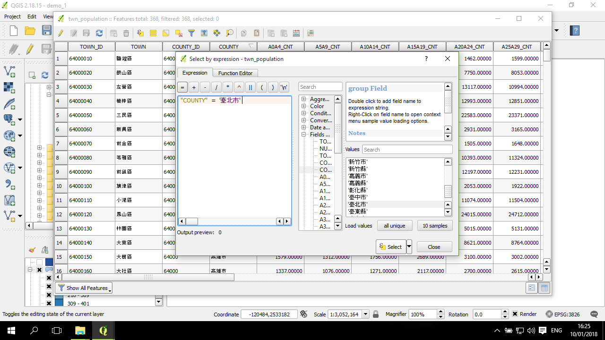
回到屬性表，這時候已經選好了臺北市的鄉鎮。可以再進一步按左下角的按鈕 (預設為 Show All Features)，選取 Show Selected Features，則會出現只有被選取的 rows：
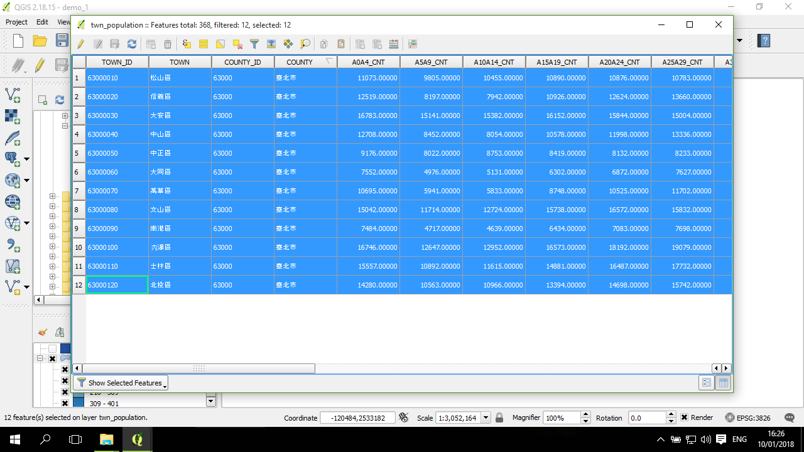
回到 QGIS 主畫面，臺北市的鄉鎮被選取 (呈黃色)：
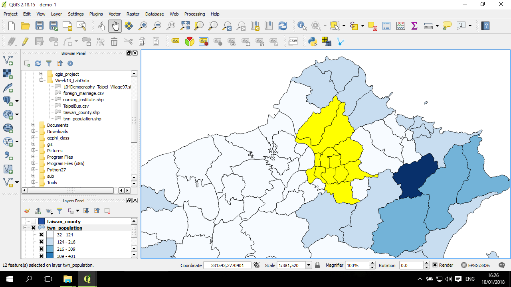
取消選取
主畫面的上方工具欄中，有一個是按鈕的符號是一塊黃色方塊以及一個紅色有取消符號方塊的按鈕 (Deselect Features from All Layers)，按一下：
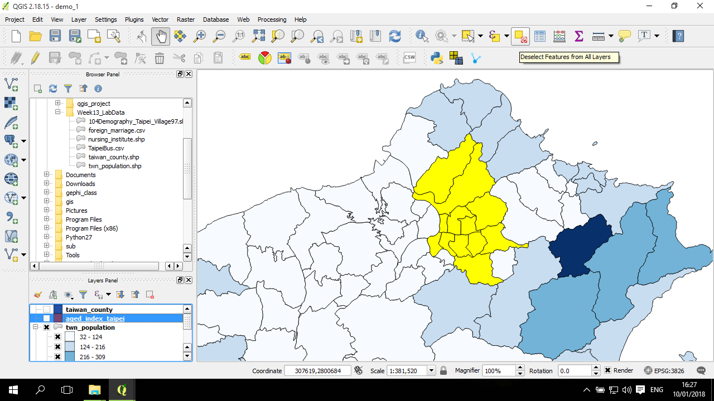
原本所有被選取起來的空間物件都被取消了：
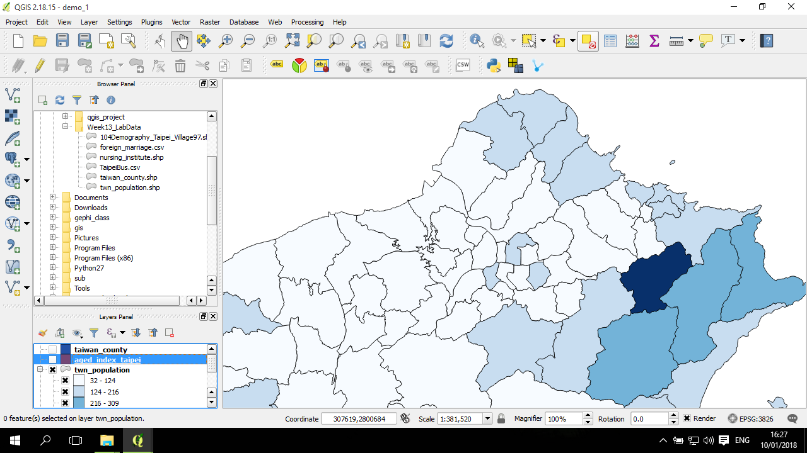